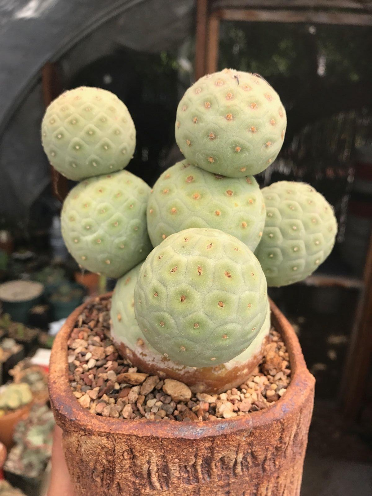

Ayuntamiento de Senés
JARDIN BOTANICO ECOSOSTENIBLE DE ESPECIES XEROFITAS

Tephrocactus alexanderi

La bola de indio (Tephrocactus alexanderi) es un cactus característico de ambientes áridos, adaptado a condiciones extremas de sequía y alta insolación. Presenta un crecimiento segmentado, formado por pequeñas secciones globosas que se desprenden con facilidad.
Su aspecto compacto y su tonalidad verde grisácea le permiten integrarse en el paisaje desértico. Carece de hojas y presenta espinas reducidas o poco visibles, siendo su principal adaptación la capacidad de almacenar agua en sus tejidos.
Esta especie es originaria de zonas áridas de América del Sur, donde crece en suelos pobres, pedregosos y bien drenados. Está perfectamente adaptada a condiciones de escasez de agua y altas temperaturas.
En entornos xerófitos, como el de Senés, se utiliza como especie representativa de adaptación extrema al medio seco.
Como otras plantas suculentas, la bola de indio destaca por su capacidad de almacenamiento de agua, lo que le permite sobrevivir largos periodos de sequía.
Su principal valor es ornamental y educativo, mostrando estrategias de adaptación vegetal en ambientes extremos.
Este cactus simboliza la resistencia, la autosuficiencia y la adaptación a condiciones adversas.
Representa la capacidad de la naturaleza para prosperar incluso en los entornos más hostiles.
La floración se produce en condiciones favorables, generalmente durante los meses cálidos, aunque puede ser irregular dependiendo del clima.
Sus segmentos pueden desprenderse fácilmente, permitiendo la reproducción vegetativa de la planta.
Es una especie muy valorada en jardinería xerófila por su bajo mantenimiento y su gran resistencia.